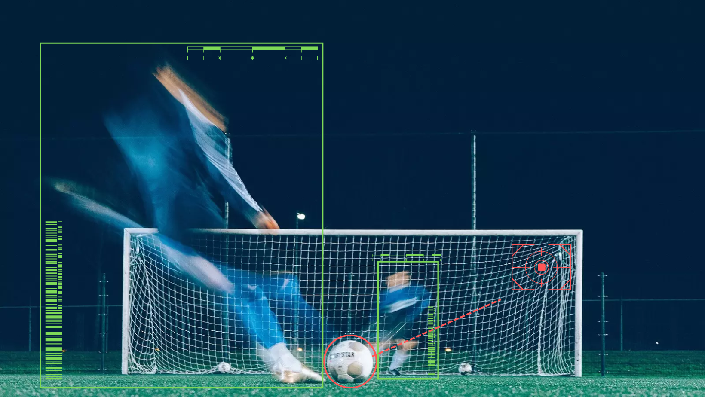
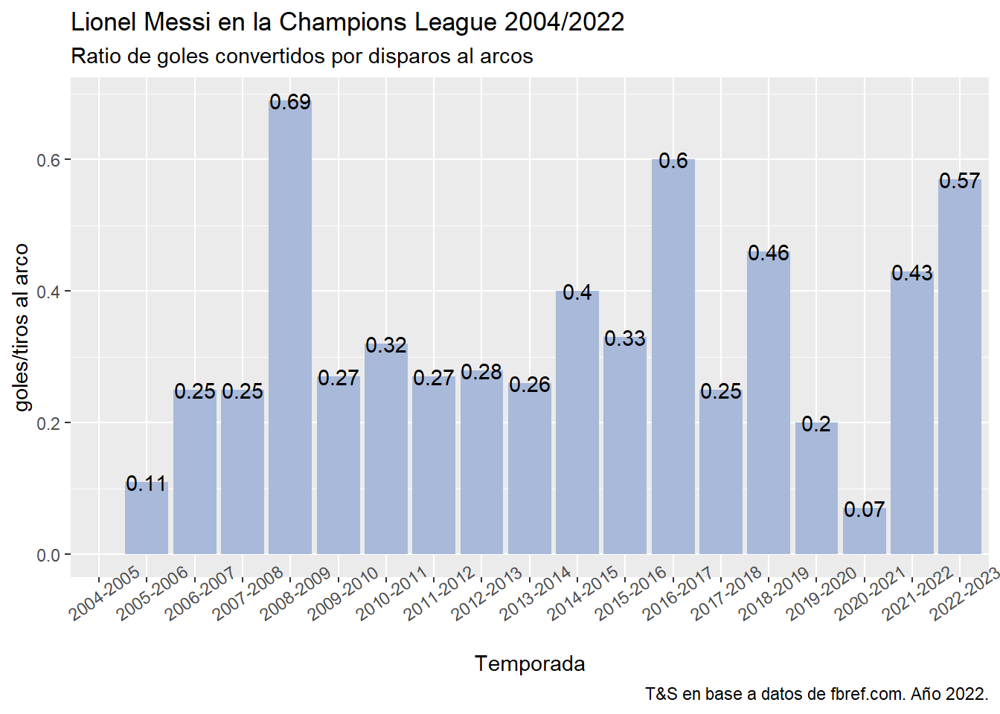
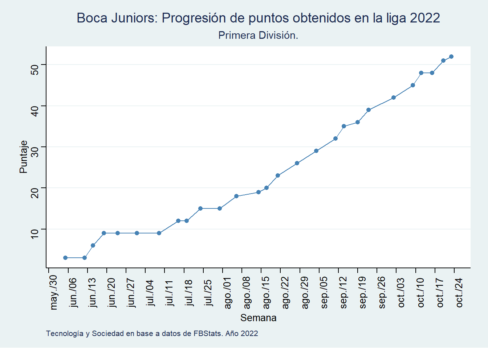
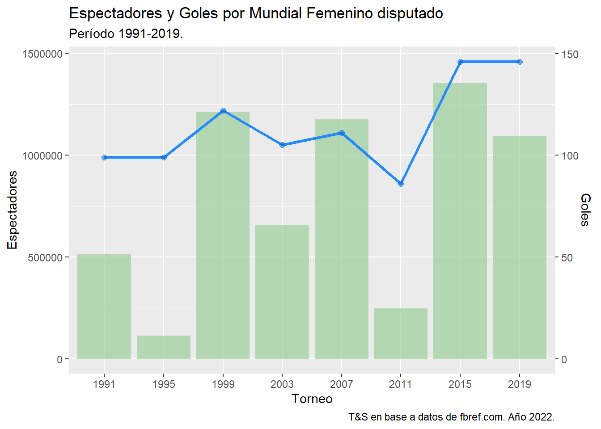

Ver código
## install.packages("worldfootballR")
library(worldfootballR)
library(tidyverse)#para manipular nuestros datos
library(gt)#para hacer tablasIntegración práctica de técnicas EDA
Pedro Damian Orden
November 2, 2022

Durante los últimos años, en el campo de la ciencia de datos las denominadas sports analytics (analítica de datos deportivos) ha ganado cierta relevancia, dada 1) la progresiva tendencia hacia la profesionalización de los deportes masivos, 2) las nuevas de tecnologías de captura de datos disponibles, 3) la incorporación de expertos en tecnologías de la información en equipos y medios de comunicación, 4) la expansión a escala global de los mercados de jugadores, y 5) el auge de las apuestas en línea, entre los procesos mas destacables, y con ello emergen progresivamente nuevos campos de saber basados en la evidencia y el deporte que pueden proporcionar a quien los analice y modelice una ventaja competitiva para con sus rivales.
Las posibles entradas a la temática son múltiples, por lo que la invitación aquí es a explorar las posibilidades que brinda R en general para trabajar con datos, y en particular, para analizar una gama amplia información proveniente de deportes de alta competencia.
Específicamente, utilizaremos técnicas EDA aplicadas a datos del fútbol nacional e internacional para dar nuestros primeros pasos en la escena de la analítica deportiva.
Comencemos.
Como muchos otros datos con los que trabajamos, los relacionados con fútbol no se encuentran dispuestos de manera ágil o sencilla para que podamos analizarlos, debemos capturarlos de alguna forma.
Para obtener la data de las competencias y/o jugadores que sean pertinentes a los objetivos de nuestro análisis, utilizaremos worldfootballR, uno de los paquetes mas completos que existen en la actualidad sobre fútbol desarrollados por la comunidad de R.
A lo largo de este documento veremos algunas de sus funcionalidades combinadas con técnicas de transformación de datos sobre casos concretos: el análisis de una liga, el scouting de un jugador o la exploración de la colección histórica de datos del mundial.
Cabe resaltar que el funcionamiento del paquete se basa en consultas a bases de datos de terceros. Para nuestro tutorial utilizaremos aquellas funciones que nos permiten conectarnos con las bases de FBREF, un portal de estadísticas de fútbol líder en el segmento, pero también pueden consultarse las bases de Transfermarkt, Understat y Fotmob.
Comenzamos instalando y levantando worldfootballR, junto al resto de paquetes de trabajo.
Para requerir los datos individuales de Lionel Messi pasamos la función fb_player_season_stats al link del jugador en fbref y obtendremos un df con datos históricos sobre distintos tipos de incidencias en la carrera del astro argentino.
messi_stats <- fb_player_season_stats(
"https://fbref.com/en/players/d70ce98e/Lionel-Messi",
stat_type = 'standard') # se pueden elegir otro tipo de estadisticas, aquí elegimos las estándar, podriamos probar con 'misc'.
#podemos guardar nuestros datos sobre messi en un excel si quisieramos
#library(openxlsx)
#write.xlsx(messi_stats, 'messi_stats.xlsx')Rows: 54
Columns: 32
$ player_name <chr> "Lionel Messi", "Lionel Messi", "Lionel Mes~
$ player_url <chr> "https://fbref.com/en/players/d70ce98e/Lion~
$ Season <chr> "2004-2005", "2004-2005", "2005-2006", "200~
$ Age <dbl> 17, 17, 18, 18, 19, 19, 20, 20, 21, 21, 22,~
$ Squad <chr> "Barcelona", "Barcelona", "Barcelona", "Bar~
$ Country <chr> "", "ESP", "", "ESP", "", "ESP", "", "ESP",~
$ Comp <chr> "1. Champions Lg", "1. La Liga", "1. Champi~
$ MP <dbl> 1, 7, 6, 17, 5, 26, 9, 27, 12, 31, 11, 35, ~
$ Starts_Time <dbl> 1, 0, 4, 11, 4, 23, 9, 23, 10, 27, 11, 30, ~
$ Min_Time <dbl> 90, 70, 322, 911, 385, 1983, 728, 1973, 927~
$ Mins_Per_90_Time <dbl> 1.0, 0.8, 3.6, 10.1, 4.3, 22.0, 8.1, 21.9, ~
$ Gls <dbl> 0, 1, 1, 6, 1, 14, 6, 10, 9, 23, 8, 34, 12,~
$ Ast <dbl> 0, 0, 1, 3, 0, 3, 2, 12, 5, 11, 0, 9, 3, 19~
$ G_minus_PK <dbl> 0, 1, 1, 6, 1, 14, 5, 6, 9, 20, 8, 33, 11, ~
$ PK <dbl> 0, 0, 0, 0, 0, 0, 1, 4, 0, 3, 0, 1, 1, 4, 4~
$ PKatt <dbl> 0, 0, 0, 0, 0, 0, 1, 4, 0, 4, 0, 1, 2, 4, 5~
$ CrdY <dbl> 0, 0, 0, 2, 1, 2, 2, 2, 1, 2, 0, 3, 0, 3, 2~
$ CrdR <dbl> 0, 0, 0, 0, 0, 0, 0, 0, 0, 0, 0, 0, 0, 0, 0~
$ Gls_Per_Minutes <dbl> 0.00, 1.29, 0.28, 0.59, 0.23, 0.64, 0.74, 0~
$ Ast_Per_Minutes <dbl> 0.00, 0.00, 0.28, 0.30, 0.00, 0.14, 0.25, 0~
$ `G+A_Per_Minutes` <dbl> 0.00, 1.29, 0.56, 0.89, 0.23, 0.77, 0.99, 1~
$ G_minus_PK_Per_Minutes <dbl> 0.00, 1.29, 0.28, 0.59, 0.23, 0.64, 0.62, 0~
$ `G+A_minus_PK_Per_Minutes` <dbl> 0.00, 1.29, 0.56, 0.89, 0.23, 0.77, 0.87, 0~
$ xG_Expected <dbl> NA, NA, NA, NA, NA, NA, NA, NA, NA, NA, NA,~
$ npxG_Expected <dbl> NA, NA, NA, NA, NA, NA, NA, NA, NA, NA, NA,~
$ xAG_Expected <dbl> NA, NA, NA, NA, NA, NA, NA, NA, NA, NA, NA,~
$ `npxG+xAG_Expected` <dbl> NA, NA, NA, NA, NA, NA, NA, NA, NA, NA, NA,~
$ xG_Per_Minutes <dbl> NA, NA, NA, NA, NA, NA, NA, NA, NA, NA, NA,~
$ xAG_Per_Minutes <dbl> NA, NA, NA, NA, NA, NA, NA, NA, NA, NA, NA,~
$ `xG+xAG_Per_Minutes` <dbl> NA, NA, NA, NA, NA, NA, NA, NA, NA, NA, NA,~
$ npxG_Per_Minutes <dbl> NA, NA, NA, NA, NA, NA, NA, NA, NA, NA, NA,~
$ `npxG+xAG_Per_Minutes` <dbl> NA, NA, NA, NA, NA, NA, NA, NA, NA, NA, NA,~Las 32 variables del dataset recojen las principales estadísticas del jugador por temporada y competencia. Cabrá destacar que las mismas son sólo de partidos de Liga y Champions League, no incorporando por ejemplo datos sobre la Copa del Rey, competición que Lio disputó y ganó durante su estadía en el Barcelona.
Con los datos disponibles, creamos un cuadro que resume, por temporada, los goles, pases, asistencias y penales convertidos por Lio en la liga doméstica de España:
messi_stats%>%
filter(Squad=="Barcelona" & Comp== "1. La Liga")%>%
select(Season, MP, Gls, Ast, PK)%>%
rename(Temporada=Season,
Partidos=MP,
Goles=Gls,
Asistencias=Ast,
Penales=PK)%>%
gt()%>%
tab_header(title = "Lionel Messi en Barcelona",
subtitle = "Estadisticas por temporada en La Liga 2004-2021")| Lionel Messi en Barcelona | ||||
| Estadisticas por temporada en La Liga 2004-2021 | ||||
| Temporada | Partidos | Goles | Asistencias | Penales |
|---|---|---|---|---|
| 2004-2005 | 7 | 1 | 0 | 0 |
| 2005-2006 | 17 | 6 | 3 | 0 |
| 2006-2007 | 26 | 14 | 3 | 0 |
| 2007-2008 | 27 | 10 | 12 | 4 |
| 2008-2009 | 31 | 23 | 11 | 3 |
| 2009-2010 | 35 | 34 | 9 | 1 |
| 2010-2011 | 33 | 31 | 19 | 4 |
| 2011-2012 | 37 | 50 | 16 | 10 |
| 2012-2013 | 32 | 46 | 11 | 4 |
| 2013-2014 | 31 | 28 | 11 | 7 |
| 2014-2015 | 38 | 43 | 18 | 5 |
| 2015-2016 | 33 | 26 | 14 | 3 |
| 2016-2017 | 34 | 37 | 9 | 6 |
| 2017-2018 | 36 | 34 | 12 | 2 |
| 2018-2019 | 34 | 36 | 13 | 4 |
| 2019-2020 | 33 | 25 | 21 | 5 |
| 2020-2021 | 35 | 30 | 9 | 3 |
Un punto destacable de este paquete es que podemos acceder a datos muy puntuales, como todas aquellas incidencias relacionadas con las oportunidades de tiro de un jugador o jugadora por campeonato y/o temporada. Veamos a continuación el ratio de goles convertidos por la cantidad de tiros al arco pateados por Messi jugando en la Champions Legue entre 2004 y 2022.
tiroschampion<-messi_tiros%>%
filter(Comp=="1. Champions Lg")
ggplot(tiroschampion) +
aes(x = Season, y = G_per_SoT_Standard) +
geom_col(fill = "#A8B9D9") +
labs(
x = "Temporada",
y = "goles/tiros al arco",
title = "Lionel Messi en la Champions League 2004/2022",
subtitle = "Ratio de goles convertidos por disparos al arcos",
caption= "T&S en base a datos de fbref.com. Año 2022.") +
geom_text(aes(label=G_per_SoT_Standard))+
theme(axis.text.x = element_text(angle = 35))
Resulta significativa la efectividad de Messi en la última temporada no?
Para concluir el apartado de datos individuales, avanzaremos en la creación de una comparativa, requiriendo en simultáneo datos sobre los minutos jugados por Messi y Ronaldo en la temporada 2022-2023, considerando los partidos de liga y copa internacional (Champions o UEFA dependiendiendo el caso). Nos interesa saber cómo llegan ambos al mundial de Qatar en lo que respecta a ritmo futbolístico y tiempo en cancha.
#pasamos la funcion fb_player_season_stats al vector de messi y ronaldo.
jugadores <- fb_player_season_stats(player_url = c("https://fbref.com/en/players/d70ce98e/Lionel-Messi", "https://fbref.com/en/players/dea698d9/Cristiano-Ronaldo"), stat_type = "playing_time")#datos de tiempo de juego
#openxlsx::write.xlsx(jugadores, 'jugadores.xlsx')| player_name | partidos_tot | min_tot | min_prom |
|---|---|---|---|
| Cristiano Ronaldo | 14 | 875 | 62.5 |
| Lionel Messi | 17 | 1486 | 87.4 |
En una primera vista, podríamos decir que en los últimos tiempos Messi jugó más que Ronaldo, participando de más partidos y siendo parte de los mismos durante más tiempo.
Otra posibilidad que nos brinda el paquete es recopilar, fecha a fecha, los partidos de una liga particular y sus incidencias.
Pongamos nuestra atención en último torneo argentino de primera división. Para ello vamos a recopilar mediante la funcion fb_match_urls los links de fbref con los datos de los partidos y vamos a guardarlos en el objeto primera_division.
Al objeto primera división podremos pedirle campos detallados de estadísticas de goles, tiros al arco, pases, posesión y más. En este caso requeriremos un summary, o resumen, del torneo. Para ello utilizaremos la función fb_advanced_match_stats.
fb_match_urls recopila los links cada partido en la base de fbstats
primera_division <- fb_match_urls(country = "ARG", #liga arg
gender = "M", #masculino
season_end_year = 2022, #temporada
tier="1st")
# #recuperamos las estadisticas avanzadas
primera_resumen <- fb_advanced_match_stats(match_url = primera_division,
stat_type = "summary",
team_or_player = "team")Rows: 754
Columns: 38
$ League <chr> "Argentine Primera División", "Argentine Primera Div~
$ Match_Date <chr> "2022-06-03", "2022-06-03", "2022-06-04", "2022-06-0~
$ Matchweek <chr> "Argentine Primera División (Matchweek 1)", "Argenti~
$ Home_Team <chr> "Barracas Central", "Barracas Central", "Tucumán", "~
$ Home_Formation <chr> "4-2-3-1", "4-2-3-1", "4-4-2", "4-4-2", "3-4-1-2", "~
$ Home_Score <dbl> 1, 1, 1, 1, 1, 1, 1, 1, 2, 2, 1, 1, 1, 1, 2, 2, 1, 1~
$ Home_xG <dbl> NA, NA, NA, NA, NA, NA, NA, NA, NA, NA, NA, NA, NA, ~
$ Home_Goals <chr> "Iván Tapia (P) · 13’", "Iván Tapia (P) · 13&~
$ Home_Yellow_Cards <chr> "2", "2", "6", "6", "1", "1", "1", "1", "2", "2", "1~
$ Home_Red_Cards <chr> "0", "0", "1", "1", "1", "1", "0", "0", "0", "0", "0~
$ Away_Team <chr> "CC Córdoba", "CC Córdoba", "Colón", "Colón", "Indep~
$ Away_Formation <chr> "4-4-2", "4-4-2", "4-5-1", "4-5-1", "4-2-3-1", "4-2-~
$ Away_Score <dbl> 1, 1, 1, 1, 1, 1, 2, 2, 1, 1, 1, 1, 2, 2, 0, 0, 1, 1~
$ Away_xG <dbl> NA, NA, NA, NA, NA, NA, NA, NA, NA, NA, NA, NA, NA, ~
$ Away_Goals <chr> "Renzo López · 77’", "Renzo López · 77&rsquor~
$ Away_Yellow_Cards <chr> "5", "5", "4", "4", "2", "2", "3", "3", "2", "2", "2~
$ Away_Red_Cards <chr> "0", "0", "0", "0", "0", "0", "0", "0", "0", "0", "0~
$ Game_URL <chr> "https://fbref.com/en/matches/fa531c8b/Barracas-Cent~
$ Team <chr> "Barracas Central", "CC Córdoba", "Tucumán", "Colón"~
$ Home_Away <chr> "Home", "Away", "Home", "Away", "Home", "Away", "Hom~
$ Min <dbl> 990, 990, 983, 990, 984, 990, 990, 990, 990, 990, 99~
$ Gls <dbl> 1, 1, 1, 1, 1, 1, 1, 2, 2, 1, 1, 1, 1, 2, 2, 0, 1, 1~
$ Ast <dbl> 0, 1, 1, 0, 1, 1, 0, 2, 0, 1, 0, 1, 1, 2, 1, 0, 1, 1~
$ PK <dbl> 1, 0, 0, 1, 0, 0, 1, 0, 2, 0, 1, 0, 0, 0, 0, 0, 0, 0~
$ PKatt <dbl> 2, 0, 0, 1, 0, 0, 1, 0, 2, 0, 1, 0, 0, 0, 0, 0, 0, 0~
$ Sh <dbl> 9, 12, 19, 7, 11, 17, 12, 11, 11, 15, 15, 9, 13, 10,~
$ SoT <dbl> 5, 6, 4, 3, 3, 4, 3, 3, 6, 3, 7, 5, 2, 4, 5, 2, 5, 6~
$ CrdY <dbl> 2, 5, 5, 4, 1, 2, 1, 3, 2, 2, 1, 2, 2, 2, 3, 4, 2, 3~
$ CrdR <dbl> 0, 0, 1, 0, 1, 0, 0, 0, 0, 0, 0, 0, 0, 0, 0, 1, 0, 0~
$ Fls <dbl> 12, 20, 13, 13, 11, 7, 6, 15, 12, 10, 20, 17, 13, 15~
$ Fld <dbl> 19, 10, 10, 13, 7, 11, 14, 5, 9, 12, 17, 20, 14, 11,~
$ Off <dbl> 1, 3, 1, 0, 1, 2, 1, 0, 3, 0, 0, 1, 3, 0, 0, 4, 1, 3~
$ Crs <dbl> 21, 19, 27, 15, 26, 17, 26, 19, 27, 15, 19, 19, 36, ~
$ TklW <dbl> 10, 20, 13, 8, 9, 11, 8, 12, 11, 18, 21, 12, 9, 16, ~
$ Int <dbl> 11, 16, 13, 5, 8, 5, 12, 13, 17, 8, 9, 10, 17, 6, 4,~
$ OG <dbl> 0, 0, 0, 0, 0, 0, 0, 0, 0, 0, 0, 0, 0, 0, 0, 0, 0, 0~
$ PKwon <dbl> NA, NA, NA, NA, NA, NA, NA, NA, NA, NA, NA, NA, NA, ~
$ PKcon <dbl> NA, NA, NA, NA, NA, NA, NA, NA, NA, NA, NA, NA, NA, ~La cantidad de datos que nos proveemos con el campo de consulta summary es significativa. Hagamos una transformación de nuestro conjunto de datos para establecer el resultado de los partidos jugados por el club Boca Juniors según la condición de local y visitante.
boca<-primera%>%
filter(Team=="Boca Juniors")%>% #filtamos el equipo
select(Match_Date, Home_Team,
Away_Team, Home_Score,
Away_Score, Home_Away)%>%
mutate(puntos_obtenidos=case_when(Home_Away=="Home" & Home_Score>Away_Score ~3,
Home_Away=="Home" & Home_Score<Away_Score~0,
Home_Away=="Away" & Home_Score>Away_Score~0,
Home_Away=="Away" & Home_Score<Away_Score~3,
Home_Score==Away_Score~1))Podremos preguntarnos cuantos puntos sacó Boca en el último torneo?
Y cual fue la performance de Boca de local y visitante?
Home_Away/puntos_obtenidos 0 1 3
Away 38.5% (5) 7.7% (1) 53.8% (7)
Home 14.3% (2) 21.4% (3) 64.3% (9)
Total 25.9% (7) 14.8% (4) 59.3% (16)Podremos observar que el equipo sumó más puntos de local ganando más partidos y perdiendo menos que de visitante.
Por último grafiquemos la progresión de puntos obtenidos fecha a fecha por el conjunto de la rivera durante el último torneo.
boca<-boca%>%
mutate(cumsum = cumsum(puntos_obtenidos), #puntos acumulados
fecha=as.Date(Match_Date))
boca%>%
ggplot() +
aes(x = fecha, y = cumsum) +
geom_point(shape = "circle", size = 1.7, colour = "#4682B4") +
geom_line(size = 0.5, colour = "steelblue") +
scale_x_date(date_labels = "%b/%d",
date_breaks= "week")+
labs(
x = "Semana",
y = "Puntaje",
title = "Boca Juniors: Progresión de puntos obtenidos en la liga 2022",
subtitle = "Primera División.",
caption = "Tecnología y Sociedad en base a datos de FBStats. Año 2022"
) +
ggthemes::theme_stata()+
theme(axis.text.x = element_text(angle = 90))
Como último elemento de nuestra exploración con R en el campo de las sports analytics, utilizaremos la función load_match_comp_results para recuperar en un dataframe los resultados históricos de los mundiales femeninos de fútbol.
Rows: 284
Columns: 20
$ Competition_Name <chr> "FIFA Women's World Cup", "FIFA Women's World Cup", "~
$ Gender <chr> "F", "F", "F", "F", "F", "F", "F", "F", "F", "F", "F"~
$ Country <dbl> NA, NA, NA, NA, NA, NA, NA, NA, NA, NA, NA, NA, NA, N~
$ Season_End_Year <dbl> 1991, 1991, 1991, 1991, 1991, 1991, 1991, 1991, 1991,~
$ Round <chr> "Group stage", "Group stage", "Group stage", "Group s~
$ Wk <chr> NA, NA, NA, NA, NA, NA, NA, NA, NA, NA, NA, NA, NA, N~
$ Day <chr> "Sat", "Sun", "Sun", "Sun", "Sun", "Sun", "Tue", "Tue~
$ Date <dbl> 33558, 33559, 33559, 33559, 33559, 33559, 33561, 3356~
$ Time <chr> "20:45", "15:30", "19:45", "19:45", "19:45", "19:45",~
$ Home <chr> "China PR cn", "Germany de", "Japan jp", "Chinese Tai~
$ HomeGoals <dbl> 4, 4, 0, 0, 3, 2, 4, 1, 2, 0, 0, 0, 0, 0, 2, 4, 2, 0,~
$ Home_xG <dbl> NA, NA, NA, NA, NA, NA, NA, NA, NA, NA, NA, NA, NA, N~
$ Away <chr> "no Norway", "ng Nigeria", "br Brazil", "it Italy", "~
$ AwayGoals <dbl> 0, 0, 1, 5, 0, 3, 0, 0, 2, 5, 8, 3, 3, 2, 0, 1, 1, 2,~
$ Away_xG <dbl> NA, NA, NA, NA, NA, NA, NA, NA, NA, NA, NA, NA, NA, N~
$ Attendance <dbl> 65000, 14000, 14000, 11000, 14000, 14000, 12000, 1200~
$ Venue <chr> "Tianhe Stadium (Neutral Site)", "Jiangmen Stadium (N~
$ Referee <chr> "Salvador Imperatore Marcone", "Rafael Rodriguez", "L~
$ Notes <chr> "", "", "", "", "", "", "", "", "", "", "", "", "", "~
$ MatchURL <chr> "https://fbref.com/en/matches/0d9e0f26/China-PR-Norwa~Cuantos goles se anotaron en lo mundiales femeninos torneo a torneo? Cómo evolucionó la cantidad de asistentes por torneo?
mundiales_tidy <- mundiales_w%>%
select(Season_End_Year, HomeGoals, AwayGoals, Attendance)%>%
mutate(goles=HomeGoals+AwayGoals)%>%
group_by(Season_End_Year)%>%
summarise(goles_total=sum(goles),
asistentes=sum(Attendance, na.rm = TRUE))%>%
mutate(fecha=as.factor(Season_End_Year))%>%
select(!Season_End_Year)
mundiales_tidy%>%
gt()| goles_total | asistentes | fecha |
|---|---|---|
| 99 | 515000 | 1991 |
| 99 | 112294 | 1995 |
| 122 | 1214215 | 1999 |
| 105 | 656789 | 2003 |
| 111 | 1176955 | 2007 |
| 86 | 248107 | 2011 |
| 146 | 1353486 | 2015 |
| 146 | 1095118 | 2019 |
Grafiquemos nuestros resultados, vamos usar el eje Y para dar cuenta del público, y en un eje Y secundario para imprimir los datos de los goles.
mundiales_tidy%>%
ungroup()%>%
ggplot() +
geom_bar(aes(x=fecha, y=asistentes),
stat="identity", fill="#9BCD9B", alpha=0.7, group = 1)+
geom_line(aes(x=fecha, y=goles_total*10000), size=1.2,
stat="identity", color="#278AFC", group = 2)+
geom_point(aes(x=fecha, y=goles_total*10000), size=2,
stat="identity", color="#0364D4", alpha=0.5 ,group = 2)+
labs(title= "Espectadores y Goles por Mundial Femenino disputado",
subtitle = "Período 1991-2019.",
x="Torneo",
y="Espectadores",
caption = "T&S en base a datos de fbref.com. Año 2022.")+
scale_y_continuous(sec.axis=sec_axis(~.*0.0001,
name="Goles"))
A lo largo de esta experiencia pudimos adentrarnos la múltiples posibilidades que nos brinda R para recopilar y explorar datos de fútbol utilizando el paquete worldfootballR. Llevando adelante técnicas EDA y de análisis descriptivo pudimos respondernos algunas preguntas sistematizando distintos conjuntos de datos descargados en cápsulas de información relevante, la materia prima que alimenta los procesos de analítica descriptiva.
Será destacable mencionar que este tipo de experiencias aplicadas no sólo son últiles para el análisis de procesos deportivos en sí, sino que además pueden coadyuvar a robustecer las habilidades de procesamiento e indagación con datos de analistas en formación, ya que se trata de técnicas amenas que constelan con abordajes de realidades gamificadas y cercanas .
En suma, las sports analytics hoy son una realidad en el mundo del análisis y ciencia de datos, pueden ser una interesante puerta de entrada para los principiantes o una profesión rentable para los analistas profesionales…un momento…qué podemos saber sobre el Mundial de Qatar 2022?
Continuará.
Extracting data from FBref : https://jaseziv.github.io/worldfootballR/articles/extract-fbref-data.html
Football Analytics: Creating an xG-xGA comparison chart in R : https://www.invertedwinger.com/football-analytics-creating-an-xg-xga-comparison-chart-in-r/
Sport Analytics: A Review: https://www.academia.edu/73063599/Sport_Analytics_A_Review
Big data and tactical analysis in elite soccer: future challenges and opportunities for sports science. https://springerplus.springeropen.com/articles/10.1186/s40064-016-3108-2
@online{damianorden2022,
author = {Pedro Damian Orden},
editor = {},
title = {Sports {Analytics} Con {R:} Explorando Datos de {Fútbol}},
date = {2022-11-02},
langid = {en}
}